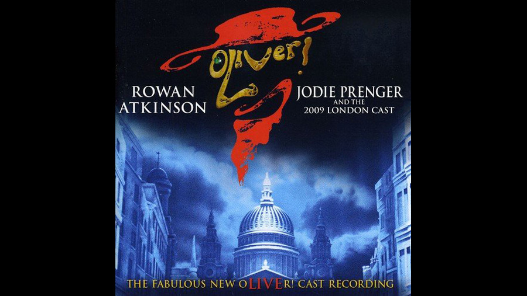

2009

CAST
Oliver Twist
-
Lawrence Jeffcoate
Fagin
-
Rowan Atkinson
Bill Sikes
-
Burn Gorman
Nancy
-
Jodie Prenger
Mr. Brownlow
-
Julian Glover
Mr. Bumble
-
Julius D'Silva
Widow Corney
-
Wendy Ferguson
Jack Dawkins, "The Artful Dodger"
-
Ross McCormack
Matron
-
Myra Sands
Noah Claypole
-
David Roberts
Charlotte
-
Mary Cormack
Mrs. Bedwin
-
Louise Gold
Bet
-
Charlotte Spencer
Landlord
-
Ian Jervis
Mr. Grimwig
-
Julian Bleach
Mr. Sowerberry, undertaker
-
Julian Bleach
Mrs. Sowerberry
-
Louise Gold
Percy Snodgrass
-
Tom Edden
CREATIVE TEAM
Director
-
Rupert Goold
Co-director and choreographer
-
Matthew Bourne
BACKGROUND
Based on the 1994 Sam Mendes production that played at the London Palladium for over three years and featuring Jodie Prenger who won her role by public vote, following the BBC 1 Reality TV show "I'd Do Anything" - sharing the role of Nancy with Australian Tamsin Carroll, who starred in Cameron Mackintosh's 2002 Australian production of Oliver!, winning every single major Australian award for Best Actress in a Musical. Carroll played the role of Nancy on Wednesday and Thursday evenings.